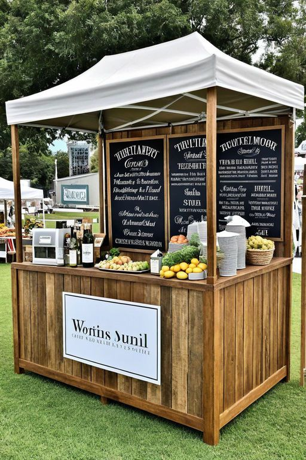

Our Story
Founded in 2020, The Heartstone began as a humble kiosk with a simple mission: to serve exceptional coffee to busy commuters. What started as a small operation quickly grew into a community favourite, known for its rich flavours and warm service. In 2022, we expanded into our full-sized cafe, creating a cozy sanctuary for coffee lovers to connect, work, and relax.
Our Heart & Our Drive
Our Mission
To craft the perfect cup of coffee and build a welcoming space that fuels conversation, creativity, and community.
Our Vision
To be the neighbourhood's most cherished gathering spot, recognised for our quality, ethics, and positive impact.
Meet Our Family
Sarah
Head Barista & Owner
Sarah's passion for ethically sourced beans is what drives our menu. She's the heart of our operation.
David
Pastry Chef
David brings his French culinary training to our kitchen, baking all our pastries fresh daily.